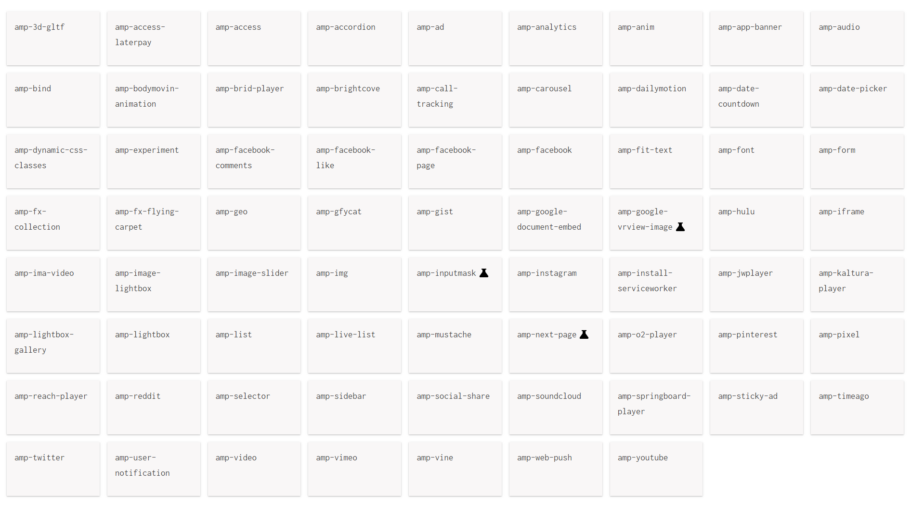
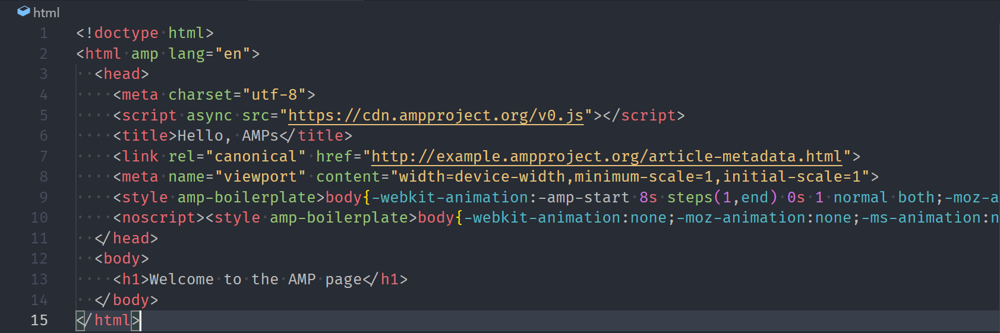
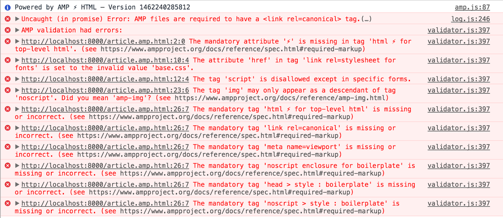

What is AMP?
Accelerated Mobile Pages
- is an HTML page that is lightweight and stripped down. The mobile user gets a much-improved experience: content is faster, more engaging, and easier-to-read.
How does AMP work?
- AMP HTML
- AMP JS
- AMP Cache
Benefits of AMP
-
Smart content prioritization
- Prefetching the elements
- No relayout
- Asynchronous load
-
Responsive design
- Always get the best image for your screen (full srcset support)
-
Limited by design
- No custom Javascript except in amp-iframe
- Max 50kB inline stylesheet
Global restrictions
- HTML with some restrictions for reliable performance
- no custom JS
- no inline CSS
- 50KB CSS limit
CSS regulations
- Inline Style Attributes: Styles must be indicated in the header of the page using a custom AMP tag.
- !important: It is important that Google AMP be able to enforce its sizing regulations on a webpage, and therefore usage of this is not allowed.
- <link rel=“stylesheet”>: This is against policy with the exception of using custom fonts.
- * (universal selector): The universal selector is banned as it can evade other selector restrictions.
- :not(): This can be used to imitate selectors.
- Pseudo-Selectors: These will have certain restrictions in Google AMP. Tag names must not start with amp-.
- -amp- and -i-amp- tag names: These tags are reserved for internal use only.
- behavior, -moz- binding: This is not supported by Google AMP.
AMP HTML documents MUST
-
contain a top-level
<html ⚡>tag (<html amp>is accepted as well). -
contain a
<link rel="canonical" href="$SOME_URL">tag inside their head that points to the regular HTML version of the AMP HTML document or to itself if no such HTML version exists. -
contain a
<meta charset="utf-8">tag as the first child of their head tag. -
contain a
<meta name="viewport" content="width=device-width">tag inside their head tag. It's also recommended to includeminimum-scale=1andinitial-scale=1. -
contain a
<script async src="https://cdn.ampproject.org/v0.js"></script>tag inside their head tag. -
contain the
AMP boilerplate code
(
head > style[amp-boilerplate]andnoscript > style[amp-boilerplate]) in their head tag.
Components
HTML markup
How to validate AMP pages
#development=1 to
URL: for example,
http://localhost:8000/example.amp.html#development=1.
and check Chrome DevTools console

Validate AMP using Google Search console
DemoRoyal Canin Website AMP'ing
Advanced example
DemoFragments
Hit the next arrow...
... to step through ...
... a fragmented slide.
Fragment Styles
There's different types of fragments, like:
grow
shrink
fade-out
fade-right, up, down, left
fade-in-then-out
fade-in-then-semi-out
Highlight red blue green
Transition Styles
You can select from different transitions, like:
None -
Fade -
Slide -
Convex -
Concave -
Zoom
Themes
reveal.js comes with a few themes built in:
Black (default)
-
White
-
League
-
Sky
-
Beige
-
Simple
Serif
-
Blood
-
Night
-
Moon
-
Solarized
Slide Backgrounds
Set data-background="#dddddd" on a
slide to change the background color. All CSS color
formats are supported.
Image Backgrounds
<section data-background="image.png">Tiled Backgrounds
<section data-background="image.png" data-background-repeat="repeat" data-background-size="100px">Video Backgrounds
<section data-background-video="video.mp4,video.webm">... and GIFs!
Background Transitions
Different background transitions are available via the backgroundTransition option. This one's called "zoom".
Reveal.configure({ backgroundTransition: 'zoom' })Background Transitions
You can override background transitions per-slide.
<section data-background-transition="zoom">Pretty Code
function linkify( selector ) {
if( supports3DTransforms ) {
var nodes = document.querySelectorAll( selector );
for( var i = 0, len = nodes.length; i < len; i++ ) {
var node = nodes[i];
if( !node.className ) {
node.className += ' roll';
}
}
}
}
Code syntax highlighting courtesy of highlight.js.
Marvelous List
- No order here
- Or here
- Or here
- Or here
Fantastic Ordered List
- One is smaller than...
- Two is smaller than...
- Three!
Tabular Tables
| Item | Value | Quantity |
|---|---|---|
| Apples | $1 | 7 |
| Lemonade | $2 | 18 |
| Bread | $3 | 2 |
Clever Quotes
These guys come in two forms, inline:
The nice thing about standards is that there are so
many to choose from
and block:
“For years there has been a theory that millions of monkeys typing at random on millions of typewriters would reproduce the entire works of Shakespeare. The Internet has proven this theory to be untrue.”
Intergalactic Interconnections
You can link between slides internally, like this.
Speaker View
There's a speaker view. It includes a timer, preview of the upcoming slide as well as your speaker notes.
Press the S key to try it out.
Export to PDF
Presentations can be exported to PDF, here's an example:
Global State
Set data-state="something" on a slide and
"something" will be added as a class to the
document element when the slide is open. This lets you
apply broader style changes, like switching the page
background.
State Events
Additionally custom events can be triggered on a per
slide basis by binding to the
data-state name.
Reveal.addEventListener( 'customevent', function() {
console.log( '"customevent" has fired' );
} );
Take a Moment
Press B or . on your keyboard to pause the presentation. This is helpful when you're on stage and want to take distracting slides off the screen.